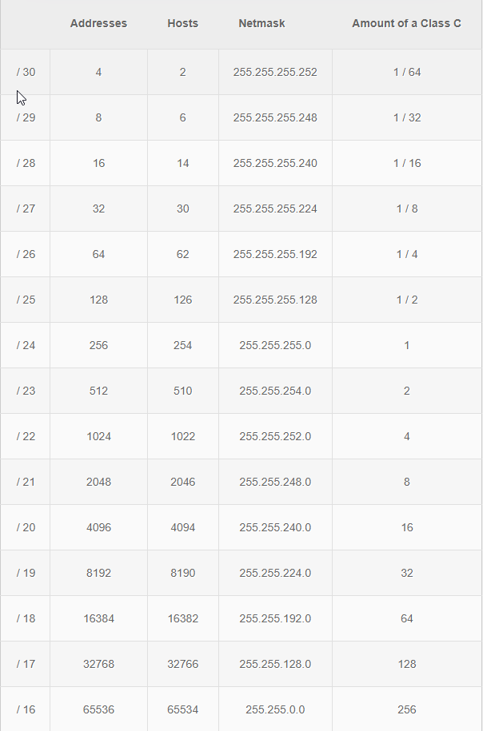

route add 10.86.27.0 mask 255.255.255.0 192.168.x.x
Situation:
If your network is 192.168.1.1 and the other local network is 10.25.1.63
you would need to add route to that network I.E. the command above
Network mask
